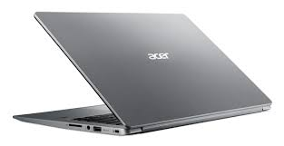

Acer 400 dollar'dan daha az fiyatlı sağlam makina. 4 cekirdekli, 128 GB SSD (solid state disk). Ubuntu kurmak için USB diskten yüklenebilir.

Ubuntu İmaj
Sistemi kurabilmek için bir USB flash disk üzerine onu "yakmak" lazım.
https://releases.ubuntu.com/18.04/
adresinden ubuntu-18.04.4-desktop-amd64.iso.torrent dosyasını
indirdim, ve Torrent ile imajı aldım. Yakma işlemi için
https://help.ubuntu.com/community/BurningIsoHowto
adresine danıştık, benim bir önceki sistemim de Ubuntu olduğu için Startup Disk Creator programını başlattık, oradan indirilen iso, ve hedef olarak USB dışkı seçtik ve yakma işlemini gerçekleştirdik.
BIOS
Bir USB flash diskten yükleme yapmak için Bios hazırlanmalı,
Önce bilgisayarı tamamen kapatın, güç düğmesini 5+ saniye basılı tutun
Bilgisayarı başlatın bu sırada [F2] basılı tutun, BIOS'a girin
[Sag] [Sag] [Sag] ok tusu ile "Security" tab'ine gidin
[Enter]'e basin supervisor password girisi yapin
[Sag] ile Boot tab'ine
[Enter] [Asagi] [Enter] ile 'disable Secure Boot' secin
[F10] [Enter] ile Save and Exit
Tekrar başlayınca USB flash diskten yükleme yapılacak.
Kuruluş sırasında basit olduğu için 'önceki sistemi tamamen silme' seçeneğini tercih edin. Böylece bir önceki Windows silinecek ve sadece sistemde Ubuntu olacak.
Kuruluş Sonrası
Paketten çıkan masaüstü idarecisi (desktop manager) program Unity kullanışlı... Fakat iş alanı (workspace) ayarı biraz garip, diğer alanlara program yollanabiliyor, işleyen programlar listesinden diğer alandaki program seçilince alan değişiyor. Fakat bir alanda iken Alt-Tab ile geçiş yapınca diğer alana geçiş var. Bunu bilinen hale çevirmek için
gsettings set org.gnome.shell.app-switcher current-workspace-only true
Böylece Alt-Tab sadece aynı iş alanındaki programlara geçiş yapar.
Çalışma alanları arasında gidip gelmek için sol üst köşede
Activities seçilir, ekranın sağında bir seçim alanı çıkıyor, buradan
alan değişimi olabiliyor.
Soldaki program listesi hem hızla tek tıklama ile başlatmak için hem de işleyen programları görmek için kullanılıyor. Bu karışıklığa sebep olabilir, eğer bir programdan bir tane işleyen varsa, ikinci başlatmak için ne yapacağız? Eğer CTRL basılı tutup tıklarsak ikinci (ya da 3., vs) program başlatılır.
Tuş üzerinden mouse tıklaması yapmak için bu makinada bazı kodlar
farklı, bizde CAPS => Ctrl, sağ tıklama => Ctrl, sol tıklama => Alt
Gr, ve Windows tuşu olur, bunun için .bashrc içinde
setxkbmap -option ctrl:nocaps
xmodmap -e "keycode 133 = Pointer_Button1"
xmodmap -e "keycode 108 = Pointer_Button1"
xmodmap -e "keycode 105 = Pointer_Button3"
xkbset m
Farklı bilgisayarlardaki tus kodlarını almak için xev kullanılabilir.
Dikkat: Touchpad üzerinden sağ tıklama için taam alt köşeden basmak lazım. Pek kullanışlı denemez, tuşlarla daha iyi.
Ubuntu kurulusu ile pek cok yazilim gelir, Transmission gibi. Alttaki
paketler ilk işlettiğimiz apt-get install listesi,
git chromium-browser emacs xkbset virtualenv texlive-latex-extra
texlive-latex-recommended texlive-base pygmentize vlc mplayer xvkbd
htop make libportaudio2 portaudio19-dev python3-dev cmake calibre
fbreader evince net-tools openssh-server build-essentials
Emacs ile F tuşlarını kullananlar için, bu tuşlar Acer tarafından kullanılmakta, ses, ışık ayarı gibi... Eğer iptal etmek ile uğraşmak istemiyorsanız, Emacs içinde FN tuşu ile beraber F1, F2, vs. basmak normal F1, F2 etkisi yapar.
Emacs'i her zaman bir Python virtualenv
ortamından başlatmak iyi fikirdir, böylece komut satırında işletilen
python çağrısı ortamda kurulan paketlere erisebilmiş olur. Bizim
mesela bir emacs.sh script var, program böyle başlatılıyor, orada
hem virtualenv girişi yapılır, ardından Emacs başlatılır,
source /home/burak/Documents/env3/bin/activate
/usr/bin/emacs25 &
Bu script icin de bir alias yaratabiliriz,
alias em="cd $HOME/Documents/kod; bash emacs.sh"
Bizim Emacs ayarlari surada.
Eğer masaüstüne işletilebilir script için ikon koymak istersek,
sudo apt-get install gnome-panel
ve
gnome-desktop-item-edit --create-new ~/Desktop
işletiriz. Bu bize bir diyalog kutusu getiriyor, orada işler kod için
mutlak ismi verilir, /bin/bash /home/user/vs/vs/script.sh gibi,
tanım vs girildikten sonra masaüstünde ikon yaratılır. Dikkat masaüstü
ikonları çift tıklama gerektirir, Unity hızlı erişim barındakiler tek
tıklama ile başlıyor.
Tıklama ile Masaüstünü Göster (Show Desktop)
Bazen pencereler çok birikir, tek bir tuşa basıp hepsini minimize etmek isteyebiliriz. Önce
sudo apt install wmctrl
Bu program komutu satırından herşeyi wmctrl -k on ile minimize edebilir.
Şimdi bir ikon yaratalım,
gedit ~/.local/share/applications/show-desktop.desktop
Dosya icine
[Desktop Entry]
Type=Application
Name=Show Desktop
Icon=desktop
Exec=wmctrl -k on
Bir uygulama yaratmış olduk, artık uygulamalar içinde "Show Desktop" kelimesini ararsak ikonumuzu bulabiliriz, ve sürekle-bırak ile sol taraftaki erişim bölgesine ekleyebileceğiz.
Pencereler Arası Geçiş (Uygulamalar Değil)
Bu Ubuntu sürümünde Unity masaüstü programı her nedense Alt-Tab ile
pencereler arası geçişi programlar arası geçise değiştirmiş, yani iki
tane tarayıcı, iki tane terminal pencereniz varsa, geçiş sadece iki
şey arasında oluyor. Bunu eski haline getirmek için Settings |
Devices | Keyboard, ve Keyboard shortcuts listesinde Switch
applications iptal edilir (tıkla, sil düğmesi ve set butonu),
ardından Switch windows tıklanır ve ona Alt-Tab ataması yapılır.
Tuşlar ile program kapatmak için ALt-F4 alışkanlık oldu, yine üstteki listeden Alt-F4 için başka bir program var, onu iptal ederiz, onun yerine program bitirme için Alt-F4 atamasını yaparız (tüslama seçimi üzerine tıklanır, Alt-F4 tıklanır bu kaydedilmiş olur).
Evince
PDF dosyalarını gösteren bu program her farklı dosya için sol tarafta
bir menü ortaya ciakrtiyor, kapatılsa bile bir sonraki dosya için
aynısını yapıyor. Her PDF aynı şekilde çıksın istiyorsanız bir PDF'i o
hale getirin, boyut vs ayarlayın, sonra sağ üst köşeden File Options |
Save Current State Aş Default seçin
Ubuntu Paket Problemleri
Eğer kuruluş sırasında coğrafik yer TR olarak seçildiyse yazılım
paketlerin alınacağı yer olarak tr.archive.ubuntu.com adresi
seçilmiş olabilir. Eğer bu servise bağlanmakta problem çıkarsa
Software Updater programına girip ilk tab'deki servislerin hangi
ülkeden olduğu değitirilebilir. Yakın olarak Netherlands, Germany, vs
bazı seçenekler.
Uyarı Sesleri
Komut satırından gelen sesleri iptal için Terminal açıp Edit | Preferences ile ses ayarlara gidilip Sound seçeneği iptal edilabilir. Eğer diğer programlardan ses geliyorsa
dconf write /org/gnome/desktop/sound/event-sounds false
onlari kapatir.
Renkler
Chrome tarayıcıyı siyah üzeri beyaz göstermek istiyorsak arama
çubuğundan chrome://flags/ adresine gidiyoruz, orada Force Dark
Mode for Web Contents seçeneğine gidiyoruz ve Enabled konumuna
çekiyoruz. Emacs için
(custom-set-faces
...
'(default ((t (:background "#141414" :foreground "#F8F8F8"))))
'(cursor ((t (:background "#CDA869"))))
'(blue ((t (:foreground "blue"))))
'(border-glyph ((t (nil))))
'(buffers-tab ((t (:background "#141414" :foreground "#CACACA"))))
'(font-lock-warning-face ((t (:background "#EE799F" :foreground "black"))))
'(font-lock-builtin-face ((t (:foreground "#CACACA"))))
'(font-lock-comment-face ((t (:foreground "#5F5A60"))))
'(font-lock-constant-face ((t (:foreground "#CF6A4C"))))
'(font-lock-doc-string-face ((t (:foreground "DarkOrange"))))
'(font-lock-function-name-face ((t (:foreground "#9B703F"))))
'(font-lock-keyword-face ((t (:foreground "#CDA869"))))
'(font-lock-preprocessor-face ((t (:foreground "#CF6A4C"))))
'(font-lock-reference-face ((t (:foreground "SlateBlue"))))
'(font-lock-string-face ((t (:foreground "Orange"))))
'(font-lock-type-face ((t (:foreground "#89788a"))))
'(font-lock-variable-name-face ((t (:foreground "#7587A6"))))
'(font-lock-warning-face ((t (:background "#EE799F" :foreground "red"))))
'(font-lock-regexp-grouping-backslash ((t (:foreground "#E9C062"))))
'(font-lock-regexp-grouping-construct ((t (:foreground "red"))))
'(minibuffer-prompt ((t (:foreground "#5F5A60"))))
'(fringe ((t (:background "black" :foreground "grey55"))))
'(linum ((t (:background "#141314" :foreground "#2D2B2E"))))
'(hl-line ((t (:background "#212121"))))
'(mode-line ((t (:background "grey75" :foreground "black" :height 0.8))))
'(mode-line-inactive ((t (:background "grey10" :foreground "grey40" :box (:line-width -1 :color "grey20") :height 0.8))))
'(gui-element ((t (:background "#D4D0C8" :foreground "black"))))
'(region ((t (:background "#27292A"))))
'(shadow ((t (:foreground "#4b474c"))))
'(highline-face ((t (:background "SeaGreen"))))
'(left-margin ((t (nil))))
'(text-cursor ((t (:background "yellow" :foreground "black"))))
'(toolbar ((t (nil))))
'(underline ((nil (:underline nil))))
'(mumamo-background-chunk-submode ((t (:background "#222222"))))
'(zmacs-region ((t (:background "snow" :foreground "blue"))))
Kaynaklar
[1] AskUbuntu
[2] AskUbuntu